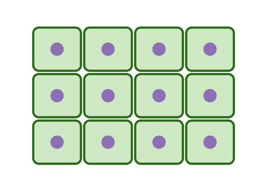
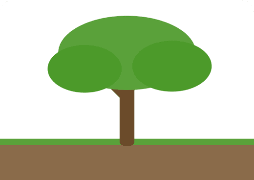
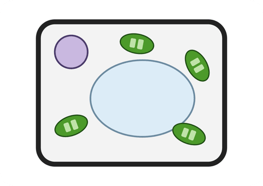
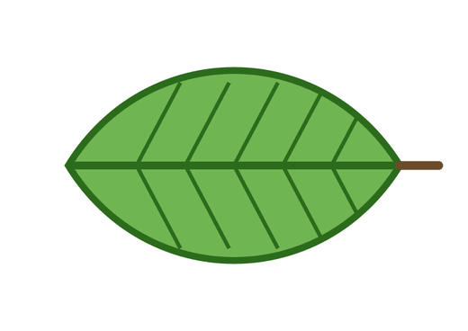
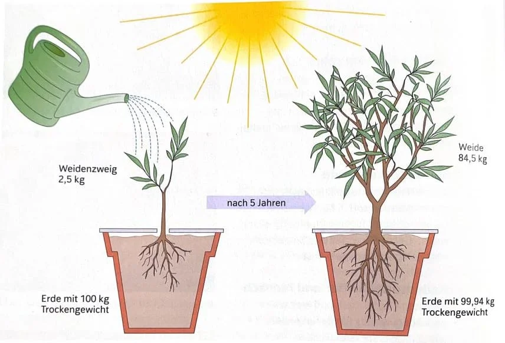
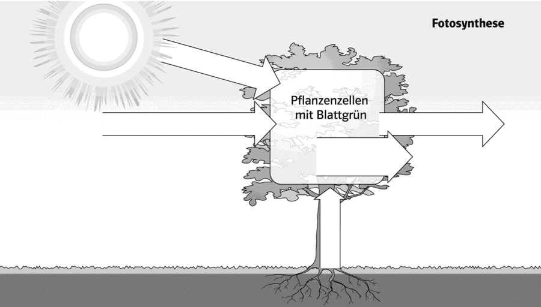
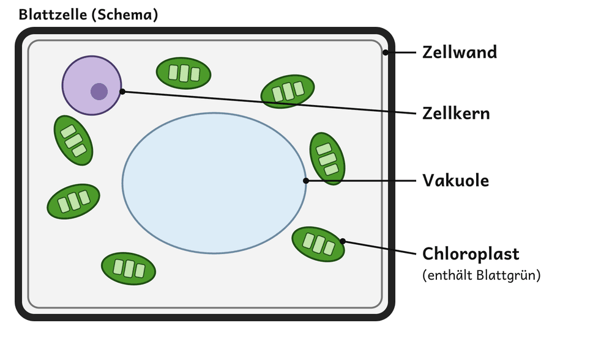
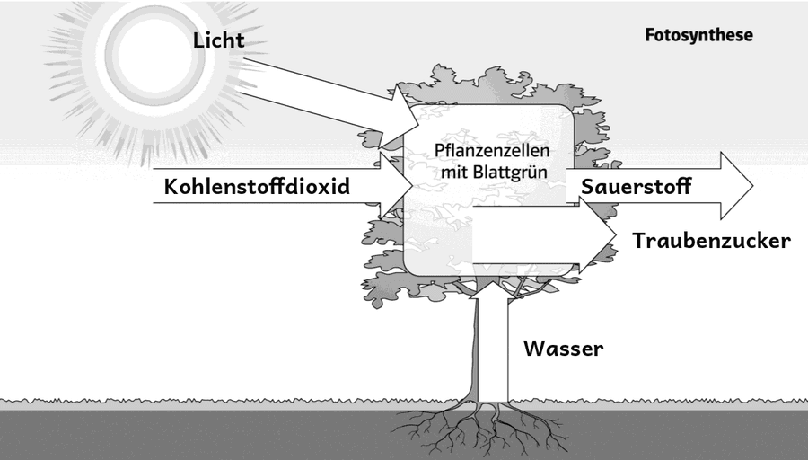

Ordne den Bildern die Organisationsstufen zu: Zelle, Gewebe, Organ, Organismus. Schreibe sie von klein nach groß in dein Heft.

A
B
C
DWort ziehen oder antippen, dann das Feld unter dem Bild antippen.
von klein nach groß

1Stelle eine Hypothese auf: Woher stammen die 82 kg, die die Weide zugenommen hat?E
Unsere Hypothesen (antippen = Strich):
2Lies M1. Markiere in jedem Absatz 1–2 Schlüsselwörter.D–E
3Beschrifte die Pfeile in M2 mit diesen Wörtern: Licht, Wasser, Kohlenstoffdioxid, Sauerstoff, Traubenzucker.E

Zum Lesen: Vorlesen lassen ist erlaubt.
3Beschrifte die Pfeile in M2 mit diesen Wörtern: Licht, Wasser, Kohlenstoffdioxid, Sauerstoff, Traubenzucker.E
Wort ziehen oder antippen, dann Feld am Pfeil antippen.
4Gib die Wortgleichung der Fotosynthese an. Nutze M1 und M2.E
5Beschreibe mit M1 und M3, welche Aufgabe die Chloroplasten in der Blattzelle haben.E

Tippe auf alle Chloroplasten: 0 von 7
4Gib die Wortgleichung der Fotosynthese an. Nutze M1 und M2.E
7aBeurteile Van Helmonts Deutung: Die Weide habe ihre Masse nur aus dem Wasser aufgebaut.F
7bErläutere, warum die Erde trotzdem 0,06 kg leichter wurde.F

6Erkläre mit den Messwerten aus M0 und mit Zeilenangaben aus M1, woher die 82 kg der Weide stammen.E–F
Was kann Masse für die Weide liefern? Tippe die richtigen Karten an.
Begründe, warum Zwiebelzellen keine Fotosynthese betreiben können.
Schreibe auf das AB (letzte Seite) oder auf einen Zettel. Wir sammeln die Antworten ein.